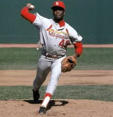

Bob Gibson was one of the fiercest competitors of any era in baseball. He dominated the National League in the 1960s and 1970s. The right-hander Hall of Fame, Bob Gibson, won seven of his nine World Series starts, eight of them complete games. He was the first pitcher in almost 50 years to finish his career with more than 3,000 strikeouts!
